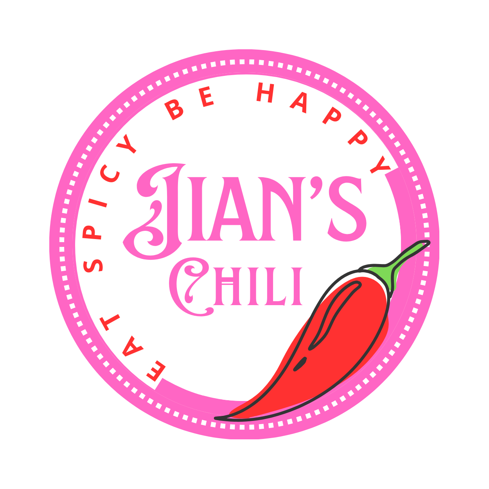
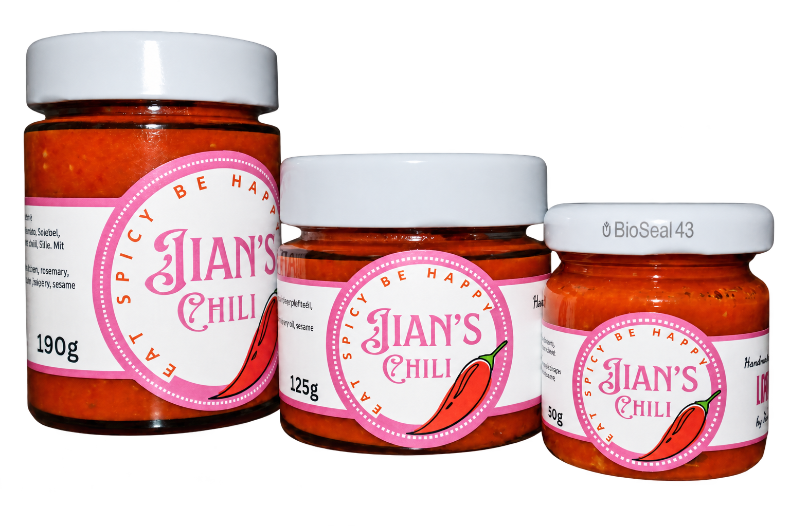

01
50g
The Explorer
Dein erster Ausflug auf die scharfe Seite. Ideal zum Probieren oder Verschenken.

Wurzeln in Chongqing · Hergestellt in der Schweiz
Eine würzige Chilisauce, von Hand mit frischen Aromen, grünem Sichuan-Pfefferöl und einem Familienrezept aus Chongqing hergestellt.

Iss scharf.
Sei glücklich.
Jians Geschichte
Als Jian Li von Chongqing in die Schweiz zog, fehlte ihr eines: Chilisauce mit echtem Geschmack.
So griff sie auf das Familienrezept zurück – mit Chili, Knoblauch, Ingwer, roten Zwiebeln und duftendem Sichuan-Pfefferöl. Aus abgefüllten Gläsern für ihre Mitstudierenden an der Universität Zürich wurde eine Chilisauce in kleinen Chargen, passend zu Fondue, Nudeln, Grilliertem und vielem mehr.
— Jian
Wähle deine Schärfe
Ein Rezept. Drei Grössen zum Verlieben.
01
Dein erster Ausflug auf die scharfe Seite. Ideal zum Probieren oder Verschenken.
Am beliebtesten
02
Die passende Grösse für den Alltag, zum Teilen und Entdecken.
03
Maximaler Geschmack und bester Wert für echte Chili-Liebhaber.
Abholung in Winterthur · Lieferdetails werden bei der Bestellung bestätigt
In jedem Glas
So schmeckt sie am besten
Einrühren, darübergeben oder als Beilage servieren. Beginne mit wenig und gib mehr dazu, bis die Schärfe genau zu dir passt.
Unter warme Nudeln mischen – für sofortige Tiefe und Schärfe.
Zu Spiegelei, gekochtem Ei oder Rührei geniessen.
Dem Schweizer Klassiker eine Chongqing-Note verleihen.
Als kräftige Beilage zu Fleisch und Gemüse servieren.
Für einen würzigen Kick in deine Lieblingssauce rühren.
Von unseren Kundinnen und Kunden
Echte Nachrichten von Menschen, die Jian’s Chili probiert haben.
Beste Chilisauce überhaupt!
Bitte bewahrt dieses Rezept für die Nachwelt auf – ich weiss nicht, was ich tun würde, wenn es diese Sauce nicht mehr gäbe.
Wir haben heute mit deiner Chilisauce Pasta gemacht. Es war unglaublich lecker.
Bereit?